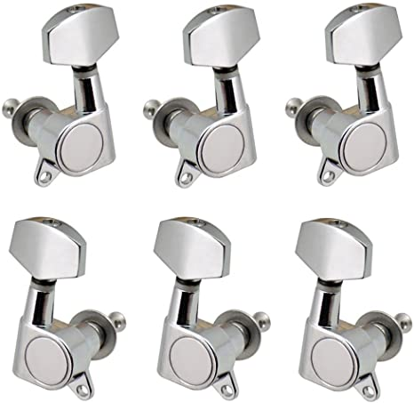

Aquí solemos encontrar el logo del fabricante. Aunque en las guitarras españolas y acústicas tenemos un diseño bastante parecido, en las eléctricas suele haber más variedad.
Estas piezas, normalmente de metal, sirven para afinar la guitarra. Unas clavijas de calidad mantienen la afinación estable durante mucho tiempo.
La cejuela es una pequeña pieza de plástico o metal que separa la pala del mástil. Mantiene las cuerdas alineadas con el mástil y tiene una función muy importante a la hora de ajustar la altura de las cuerdas.
En muchas guitarras eléctricas encontramos una pequeña tapa metálica en la pala. Bajo esta tapa está el tensor del alma con el que podemos ajustar la curvatura del mástil.
Después de la pala, tenemos el mástil. La parte larga de madera donde donde producimos las notas musicales a través de los trastes. Aquí también podemos encontrar diseños muy originales a través de los marcadores de los trastes.
Quizá no te has fijado, pero el mástil tiene dos piezas de madera separadas. La pieza de madera superior, normalmente más oscura, donde se encuentran los trastes es el diapasón. El diapasón se elabora en maderas resistentes que soportan el maltrato continuo de los dedos del guitarrista.
Los trastes son las tiras de metal que separan cada nota musical del diapasón. La altura y anchura afecta a la hora de tocar más rápido y hacer florituras con más facilidad como "bendings". Para los principiantes, hay que aclarar que a la hora de tocar también llamamos traste a la propia separación entre las dos tiras.
Algunos trastes tienen marcas que contrastan con la madera. Normalmente las marcas están en los trastes 3, 5, 7, 9 y 12, aunque muchas guitarras eléctricas tienen marcas por encima del 12 como referencia. Lo común es usar pequeños puntos, pero podemos encontrar de todo: triángulos, cuadrados, flores, calaveras...
El alma es una barra de metal que recorre el interior del mástil y permite ajustar la curvatura del mismo aumentando o disminuyendo la tensión.
Y llegamos al cuerpo, la parte de la guitarra en la que rasgueamos las cuerdas con la púa o con los dedos.
En las guitarras acústicas y clásicas al cuerpo se le denomina caja de resonancia. Los materiales y la propia forma del cuerpo influye en el sonido que genera la guitarra.
El agujero central del cuerpo es la parte de la guitarra acústica y española que emite el sonido.
El puente es la parte de la guitarra donde aseguramos las cuerdas al cuerpo. En la guitarra eléctrica tenemos varios tipos de puente e influye a la hora de ajustar el tono y la altura de las cuerdas.
En algunas guitarras eléctricas encontramos puentes móviles que nos permiten modificar el tono de las notas. Para ello usamos una palanca asegurada al puente, a la que también se conoce como tremolo.
La parte de la guitarra eléctrica y electroacústica que hace de "micrófono" para recoger el sonido de las cuerdas y amplificarlo. En las guitarras eléctricas se encuentran a la vista, pero en las acústicas es común que estén dentro del cuerpo.
Es una lámina que normalmente se fabrica en plástico y sirve para proteger el cuerpo de los golpes de la púa.
En la guitarra eléctrica podemos controlar el volumen y tono de las pastillas a través de unas perillas insertadas en el cuerpo.